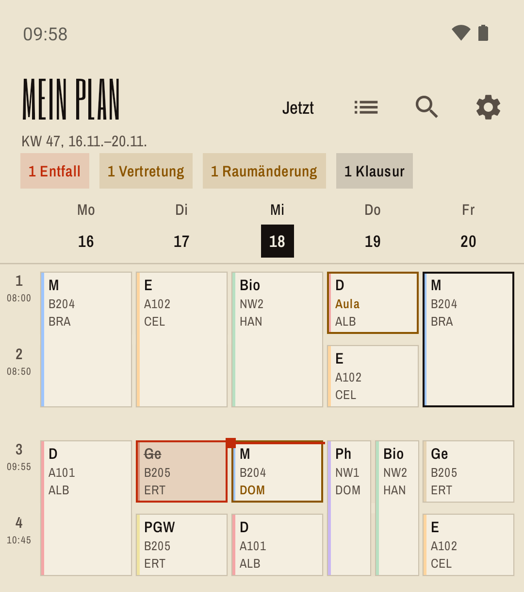
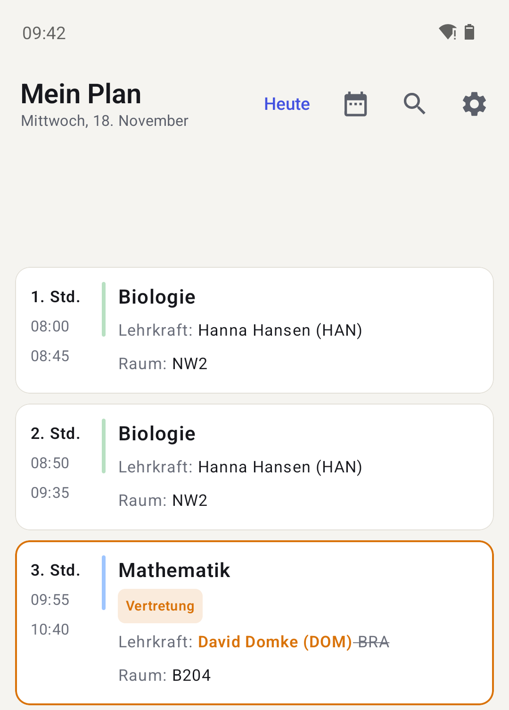
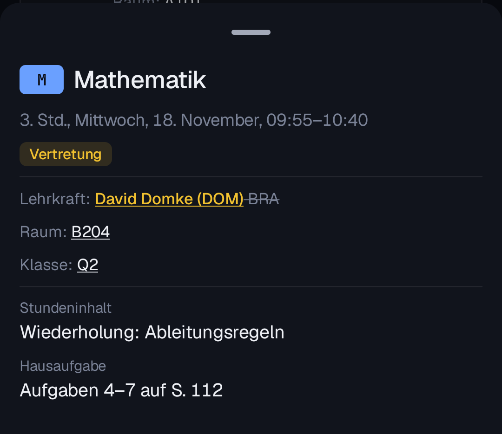
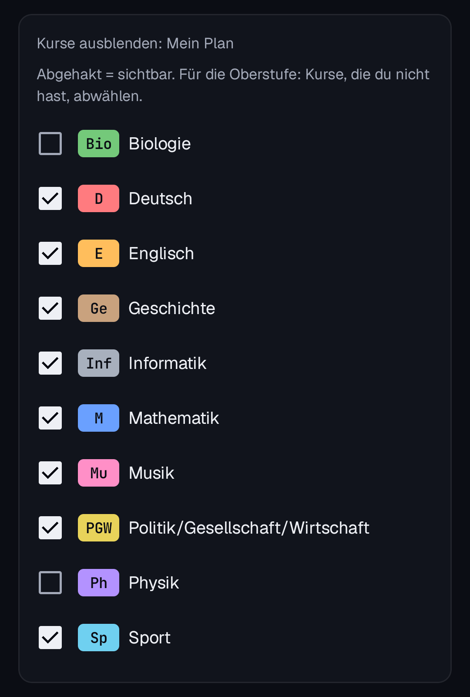
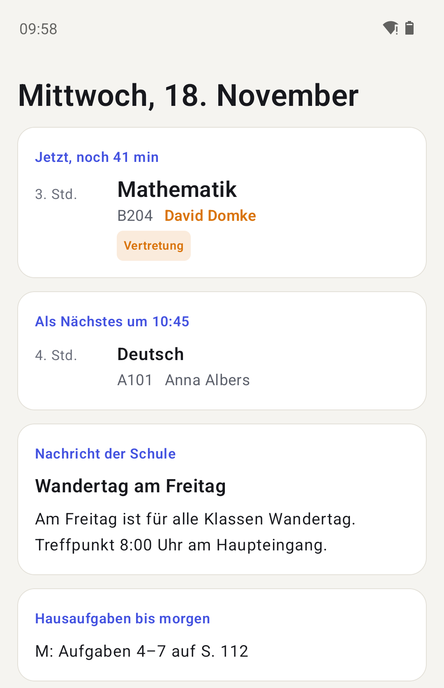
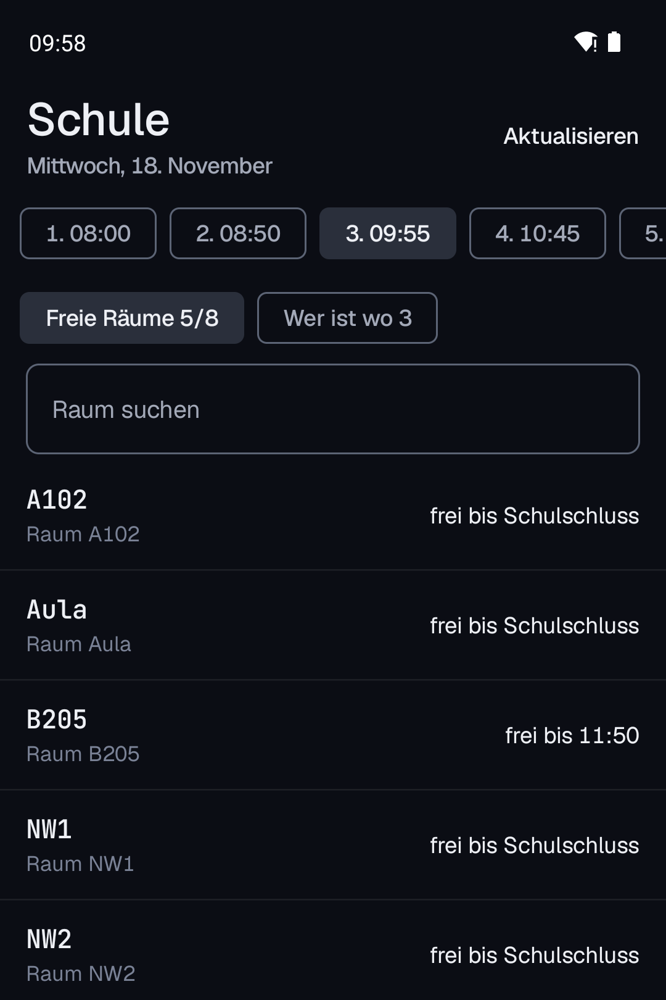
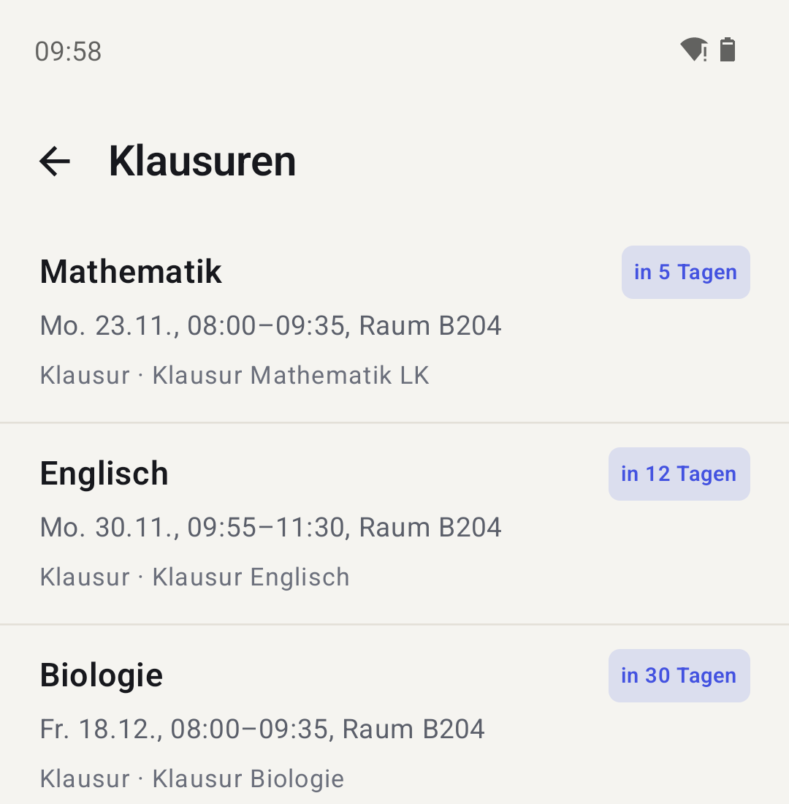
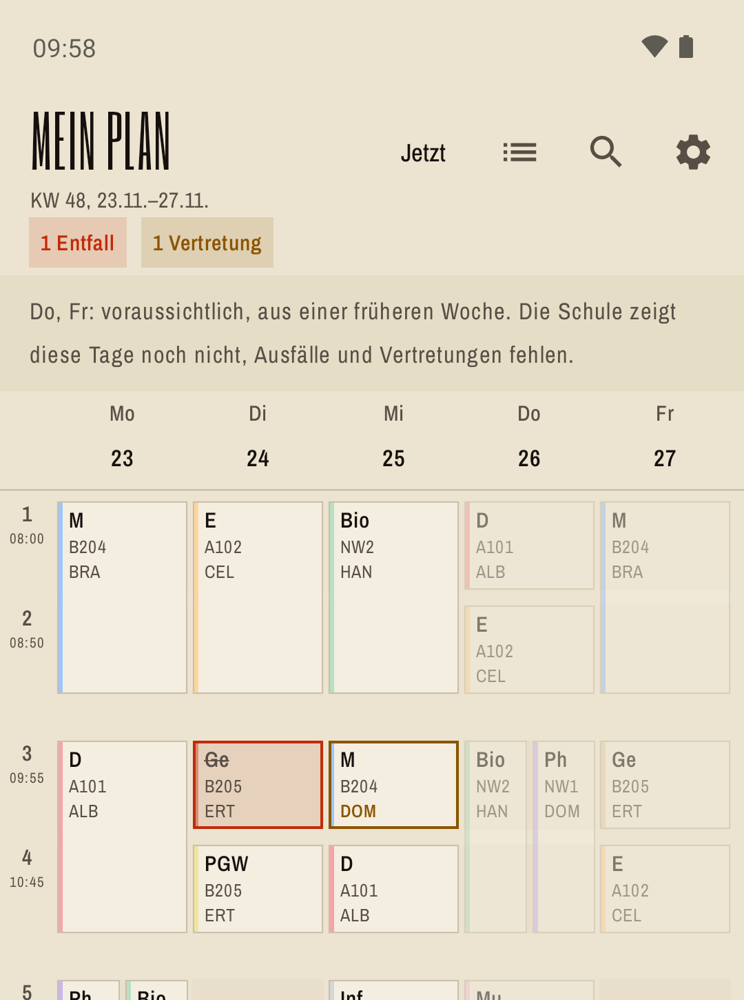
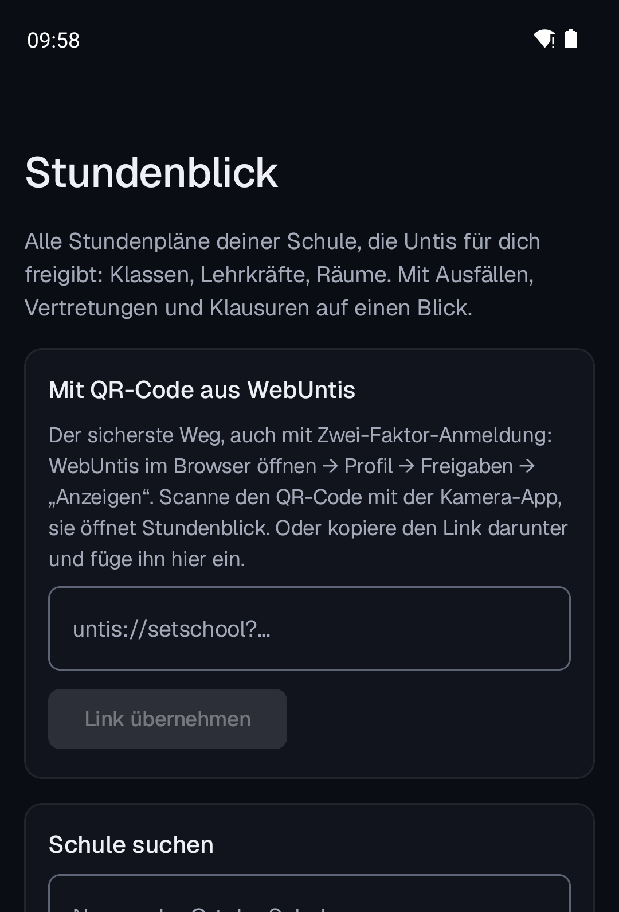
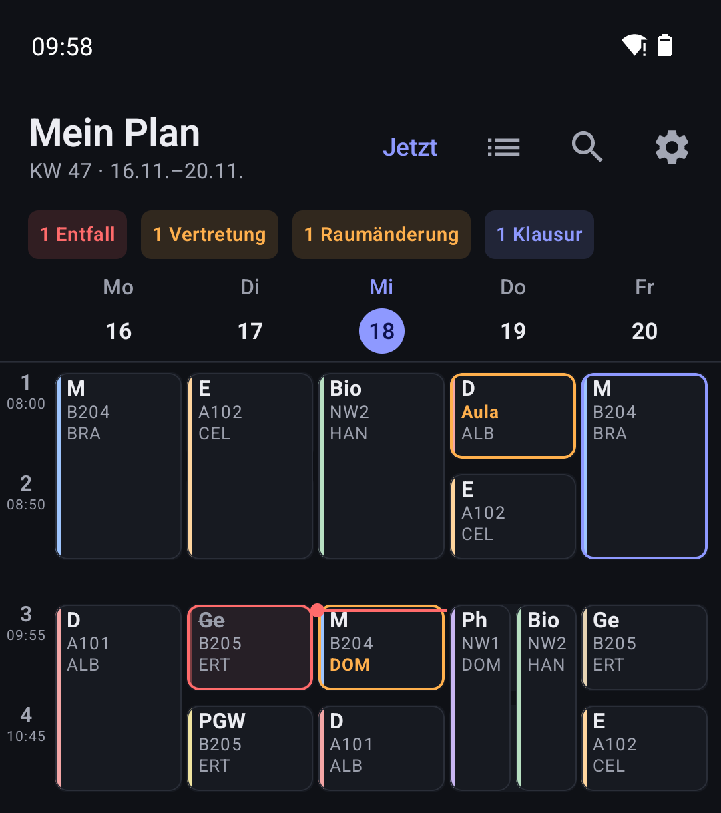

Dein Untis-Plan, endlich lesbar
Android-App für WebUntis-Schulen, als freier Nachfolger von BetterUntis.

Was ist mit BetterUntis passiert?
Abgeschaltet ist nichts. Die Schnittstelle von Untis Mobile liefert weiter Pläne, nur gepflegt wird BetterUntis nicht mehr.
| BetterUntis | Stundenblick | |
|---|---|---|
| Letzte stabile Version | 4.0.3 vom 6. November 2023 | 0.11 vom November 2026 |
| Freie Räume | Raumfinder für gewählte Räume | alle Räume der Schule, jede Stunde |
| Eigener Plan leer | offenes Issue #503 | ein Tipp: Klasse als eigenen Plan setzen |
| Schnittstelle | die interne von Untis Mobile | dieselbe, am 15.11.2026 geprüft |
| Lizenz | GPL-3.0 | GPL-3.0 |
Welche Untis-Pläne zeigt Stundenblick?
Jeden Plan, den deine Schule für dein Konto freigibt: deine Klasse, andere Klassen, Lehrkräfte, Räume.
Der Tag mit vollen Namen
Wer unterrichtet, in welchem Raum, und wer eigentlich dran gewesen wäre.

Jede Stunde im Detail
Stundeninhalt und Hausaufgaben, sobald die Lehrkraft sie in WebUntis einträgt.

Nur deine Kurse
In der Oberstufe wählst du pro Plan ab, welche Fächer du nicht hast.

Was zeigt Stundenblick, das Untis Mobile nicht zeigt?
Was BetterUntis konnte, dazu die freien Räume der ganzen Schule und die Woche im Voraus.
Was jetzt dran ist
Die laufende Stunde mit Restminuten, die nächste, Hausaufgaben bis morgen und die nächste Klausur.

Welcher Raum gerade frei ist
Aus allen Klassenplänen: die freien Räume jeder Stunde, bis wann sie frei sind und wer wo Unterricht hat.

Klausuren, Hausaufgaben, Fehlzeiten
Klausuren mit Countdown, Hausaufgaben zum Abhaken, dazu Sprechstunden und die Nachricht des Tages.

Die Woche, auch wenn die Schule nur morgen zeigt
Fehlende Tage kommen blass aus einer früheren Woche, bis die Schule sie freigibt.

Was passiert, wenn eine Stunde ausfällt?
- Entfall
- Rot und durchgestrichen, im Raster wie in der Tagesliste.
- Vertretung und Raumänderung
- Orange, der neue Name vorn, der alte durchgestrichen daneben.
- Klausur
- Blau umrandet, mit der Art der Prüfung.
- Meldung aufs Handy
- Einmal pro Stunde prüft die App diese und die nächste Woche. So sieht eine Meldung aus:„Di. 17.11., 3. Std.: Ge entfällt“
Reicht der QR-Code aus WebUntis?
Ja, er ist der einfachste Weg, auch mit Zwei-Faktor-Anmeldung.
- QR-Code
- WebUntis im Browser, Profil, Freigaben, Anzeigen. Mit der Kamera scannen.
- Benutzername und Passwort
- Schule suchen, anmelden. Gespeichert wird nur der Schlüssel von Untis.
- Ohne Anmeldung
- Wenn deine Schule öffentliche Pläne hat. Oder erst mal die Demo-Schule.

Was braucht mein Handy?
- Android
- 8.0 oder neuer
- Google-Dienste
- nicht nötig, auch GrapheneOS
- Download
- 1,4 MB
- Verbindungen
- WebUntis und GitHub
- Passwort
- wird nie gespeichert
Probier es an der Demo-Schule
Ohne Konto, mit erfundenen Daten. Hell und dunkel, wie dein Handy eingestellt ist.
